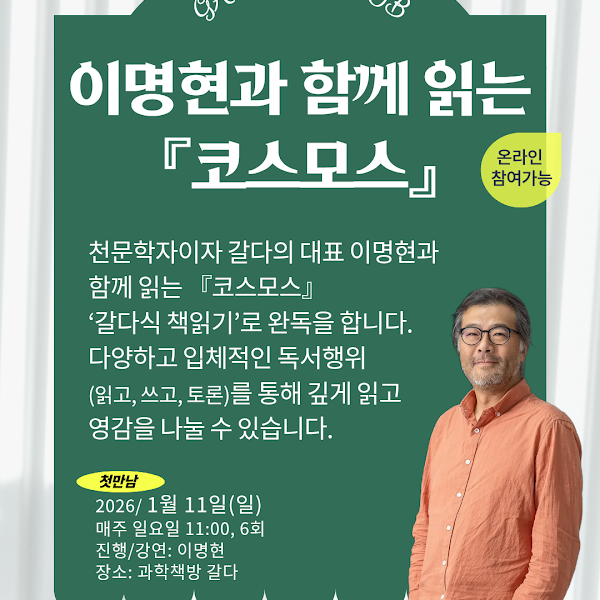
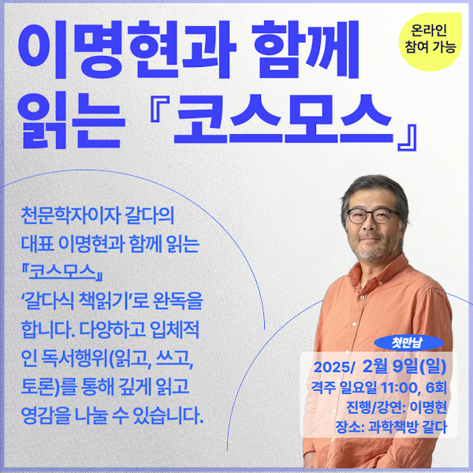
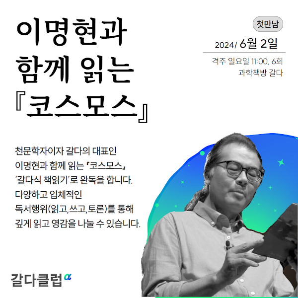

COSMOS ARCHIVE
갈다 코스모스
이명현과 함께 읽는 『코스모스』.
함께 우주를 읽어온 프로그램의 기록을 모았습니다.
원본 프로그램 383개 중 ‘이명현과 함께 읽는 코스모스’에 해당하는 3개의 기록입니다. 날짜는 원본 게시일이며, 행사 일정은 각 게시물에서 확인하실 수 있습니다.
전체 3개의 기록
검색 결과가 없습니다. 다른 검색어나 연도를 선택해보세요.
이명현과 함께 읽는 『코스모스』.
함께 우주를 읽어온 프로그램의 기록을 모았습니다.
원본 프로그램 383개 중 ‘이명현과 함께 읽는 코스모스’에 해당하는 3개의 기록입니다. 날짜는 원본 게시일이며, 행사 일정은 각 게시물에서 확인하실 수 있습니다.
전체 3개의 기록



검색 결과가 없습니다. 다른 검색어나 연도를 선택해보세요.